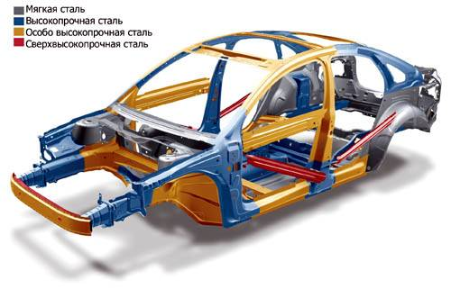

Кузов является несущим элементом автомобиля. В нем располагаются водитель и пассажиры, к нему крепится двигатель, все агрегаты трансмиссии, ходовой части, механизмы управления и дополнительное оборудование. Он же является «минусовым» проводником для системы электрооборудования автомобиля.
Кузов автомобиля – это сложная инженерная, геометрически правильная конструкция из металла, стекла и других материалов. Металлическая часть кузова состоит из днища и крыши, крыльев и панелей, дверей, крышек капота и багажника, а также множества более мелких элементов. В специальные проемы устанавливаются лобовое, заднее и боковые стекла. Говорить о всевозможных деталях из пластмассы и других искусственных материалов, вообще не имеет смысла, а об их количестве можно только догадываться.
Для размещения водителя и пассажиров в салоне предусмотрены сидения. В целях обеспечения безопасности людей в движущемся автомобиле, сидения оборудованы специальными ремнями. В случае аварии эти ремни способны удержать взрослого человека на его сидении.
Внутри салона располагается все необходимые органы управления автомобилем и приборы для контроля за работой его агрегатов и систем. Комфорт, при движении в любых погодных условиях, обеспечивают системы вентиляции и отопления салона машины. Вообще, в салоне заложен весь комплекс комфортных услуг, начиная от пепельницы и подлокотников, и заканчивая тем, что придет вам в голову, и на что хватит денег.
Предела усовершенствованию внутреннего пространства салона нет. Но при этом не должны быть нарушены требования по обеспечению безопасности дорожного движения. Имеется в виду, что наряду с установкой внутрисалонного панорамного зеркала, радиоприемника, телевизора, телефона и другого «безобидного» дополнительного оборудования, допустим установка зеркальных стекол, однозначно запрещена.
Обычно, по внутреннему состоянию салона можно определить и сказать о характере водителя почти все. Салон автомобиля, как дом, в котором вы проводите немалую часть своей жизни, только в миниатюре. Содержать его по-другому, чем жилище, просто невозможно.
Эксплуатация кузова
Первое, что видит владелец, подходя утром к своему автомобилю – это его кузов. И какова же его реакция на увиденное?
Он радостно улыбается, если кузов блестит или мрачно вздыхает, если вместо блеска - ржавчина и дыры. Состояние кузова и ваше утреннее настроение полностью зависят от прилежности или лени по уходу за автомобилем. И поверьте, в данном случае ваши финансовые затраты будут явно оправданы, так как кузовной ремонт или его замена образуют большую дыру в бюджете семьи.
Для того чтобы кузов служил подольше, следует начать с необходимой процедуры – антикоррозионной обработки его днища и скрытых полостей. Есть умельцы, которые сами делают эту трудоемкую и не очень чистую работу, но лучше все-таки сделать это на специализированной станции. Обработка будет качественной, если сделана она под большим давлением, которое в домашних условиях создать сложно.
Подкрылки, которые закрывают внутренние полости крыльев, просто жизненно необходимы на некоторых моделях автомобилей. Ни для кого не секрет, что на таких машинах как ВАЗ 2105 и ВАЗ 2107, в первую очередь, ржаветь начинают именно крылья (передние). Происходит это по причине постоянной мокрой «пескоструйной обработке» и плохой вентиляции передней области крыльев. Уж в этом случае, экономить на подкрылках, точно не стоит.
Лакокрасочное покрытие кузова – дышит, и именно от вас зависит, чем будет дышать ваш «дом на колесах». В наших отечественных условиях, с грязью и солью на дорогах, этому вопросу надо отдать определенное личное время. Это и банальная мойка кузова (желательно ежедневная), и покрытие его специальными пастами, полировка и прочая косметика.
Небольшие царапины на кузове автомобиля необходимо сразу же подкрашивать, пятна ржавчины – удалять, потускневшие детали хромированной декоративной отделки – оттирать и так далее. В общем, внешний вид вашего «железного» друга полностью зависит от вашего трудолюбия и финансовых возможностей.
Большая беда современных автомобилей, это наличие многочисленных пластмассовых накладок, щитков, ручек и прочих элементов облицовки салона. Дребезжание, поскрипывание, попискивание и прочие неприятные уху звуки во время движения, не так уж безобидны. Любой шум постепенно расшатывает нервную систему человека. И если не найти способ устранения шумовой атаки, то можно стать неврастеником. Как правило, владельцы автомобилей сами находят пути к победе в «пластмассовой войне», начиная от подкладывания бумажек и тряпочек, и заканчивая полной разборкой облицовки салона и подклейкой войлочных основы на все дребезжащие детали.
В процессе эксплуатации автомобиля могут порваться, завернуться, замяться резиновые уплотнители дверей, багажника и прочие, что позволяет попадать в салон, летом - пыли, а зимой - холодному воздуху. Но кроме этого, в салон начинают подсасываться выхлопные газы, а это уже серьезно. Водитель становится вялым и невнимательным, замедляется реакция, ухудшается зрение. И если у вас нет желания постоянно попадать в аварийные ситуации, то стоит восстановить герметичность салона кузова.
Независимо от срока эксплуатации автомобиля, могут возникать те или иные проблемы и неисправности с его кузовом, оборудованием, агрегатами и системами. Если водитель относится к машине как к надежному помощнику в своих делах, если он хочет иметь свой автомобиль в полной боевой готовности, то необходимо не только периодически, но и ежедневно уделять ему определенное внимание и время. Тогда он ответит тем же, будет приятно блестящим, твердо стоящим на своих четырех «ногах» и с ласково журчащим звуком мотора, уверенно повезет своего хозяина хоть на край земли.
Еще немного об автомобильных кузовах ...